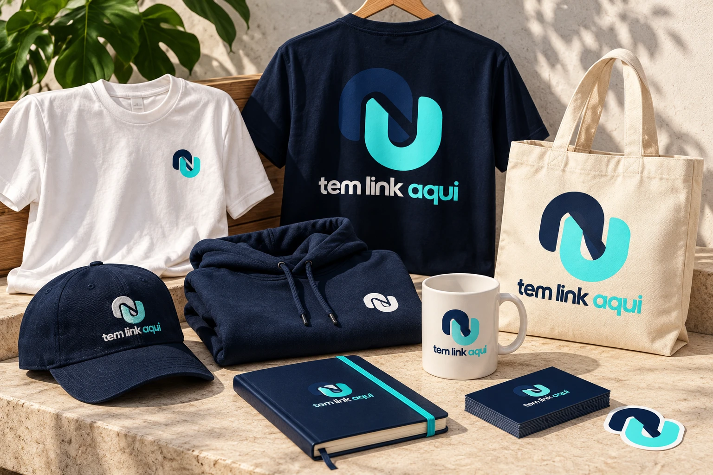

Tem Link Aqui
Identidade, presença e possibilidades.

Três direções selecionadas de branding · 23/10/2026
Estudo conceitual para comparação — não aplicado ao produto.
Um sistema, em qualquer escala.
Proteger o símbolo com uma margem de pelo menos 1/8 do canvas. Mínimos digitais propostos: símbolo 16 px, assinatura horizontal 220 px. Em áreas estreitas, usar o símbolo. Não esticar, girar, recolorir nem acrescentar efeitos ao mestre.
Presença digital com a mesma voz.
Post 1080×1080, story 1080×1920 e capa 1200×630. Favicon SVG adaptativo, ICO/PNG, Apple Touch, avatar e maskable. A configuração de PWA não foi integrada ao site. Os textos são propostas de campanha, sem promessas de resultado.